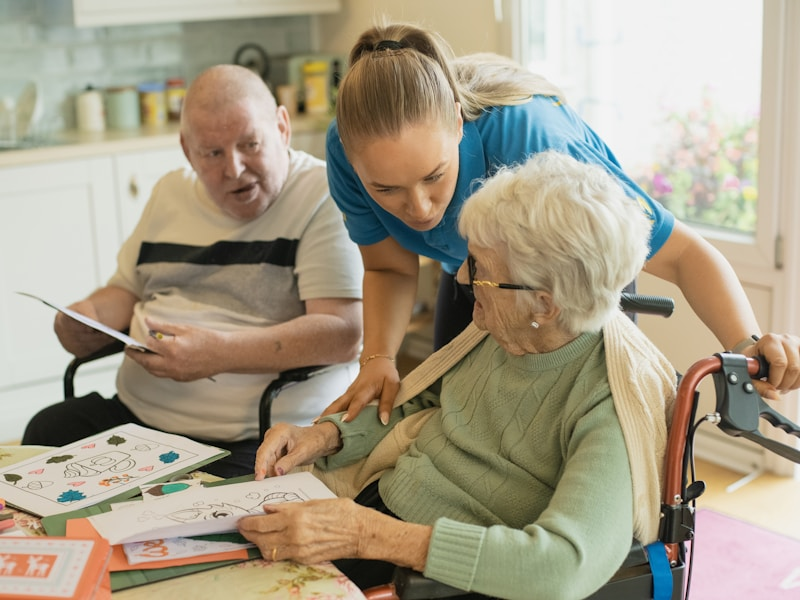

Built for Every Role in Home Care
Whether you run the agency, manage care, coordinate rotas, deliver visits, or care about someone receiving support — homecareOS was designed with you in mind.
As a business owner, you didn't start your agency to drown in admin.
You started it to build something meaningful — to deliver care that makes a difference. But somewhere between the spreadsheets, the compliance worries, and the 2am phone calls, the business started running you.
No visibility into your margins
You're making decisions based on gut feel because there's no single dashboard showing revenue per client, cost per visit, or staff utilisation. Profitable clients look the same as loss-making ones.
CQC compliance keeps you up at night
Every inspection is a roll of the dice. Your documentation is scattered, your audit trail has gaps, and you're never quite sure if you'd pass an unannounced visit today.
Growth is bottlenecked by your systems
You've turned down new contracts because you can't scale your admin to match. Every new client means more manual work, more phone calls, and more risk of things falling through the cracks.
While you're firefighting admin tasks, your competitors with better systems are winning tenders, scaling faster, and sleeping easier. Every week without proper visibility is a week where margins erode silently, compliance gaps widen, and growth opportunities pass you by. The question isn't whether you can afford to invest in better software — it's whether you can afford not to.
Run your agency with confidence, not guesswork
homecareOS gives you a real-time command centre for your entire operation. See exactly where your money goes, how your team performs, and where your next opportunity lies.
- Live revenue and margin dashboards per client and per carer
- Automated CQC compliance tracking — always audit-ready
- Scalable infrastructure — add 50 or 500 clients without extra admin
- Multi-branch oversight from a single login
- Business intelligence reports that help you win new contracts
"I finally know exactly where my money is going. We identified three loss-making contracts in the first month and restructured them. homecareOS paid for itself before the trial ended."
Free trial. No credit card required. Set up in under 10 minutes.
As a care manager, every detail matters — because people's lives depend on it.
You carry the weight of ensuring every care plan is followed, every medication is administered, and every incident is documented. But with paper systems and disconnected tools, you're always one step behind.
Care plans are inconsistent and outdated
Different carers follow different versions. Changes take days to propagate. You've found care plans that haven't been reviewed in months — and prayed the inspector wouldn't find them too.
Audit preparation consumes entire weeks
Before every CQC visit, you're pulling all-nighters compiling evidence, chasing missing signatures, and praying the documentation paints the right picture. It shouldn't be this hard.
No real-time oversight of what's happening in the field
You only find out about missed visits, late arrivals, or incidents after the fact. By the time it reaches you, it's already a complaint — or worse, a safeguarding concern.
One missed medication. One undocumented incident. One outdated care plan found during inspection. That's all it takes to put your professional reputation — and your residents' safety — at serious risk. You became a care manager because you believe in delivering outstanding care. Your tools should make that possible, not make it harder.
Care quality you can see, track, and prove
homecareOS puts every care plan, every visit note, and every compliance record at your fingertips — live, accurate, and always audit-ready.
- Digital care plans that update instantly across all devices
- Automated review reminders and version tracking
- Real-time incident alerts and escalation workflows
- One-click CQC evidence packs — no more all-nighters
- Medication management with administration tracking
"We went from dreading CQC visits to welcoming them. Everything the inspector needed was two clicks away. We moved from Requires Improvement to Good in six months."
Free trial. No credit card required. Set up in under 10 minutes.
As a coordinator, your mornings start with chaos — and the day only gets harder.
Before your first coffee, you've already had three cancellation texts, two carers calling in sick, and a rota that looked perfect yesterday but is now full of holes. You spend your entire day reacting instead of managing.
Rota management is a full-time job in itself
You're juggling availability, preferences, travel time, training requirements, and continuity of care — on a spreadsheet. One change cascades into twenty more.
You're the human switchboard for every problem
Carers ring you for directions. Families ring you for updates. The office rings you about gaps. Your phone never stops, and nothing is documented because you're too busy answering it.
Last-minute cancellations derail your entire day
A single sick call at 7am means an hour on the phone finding cover, rearranging visits, and hoping nothing gets missed. By lunchtime, today's plan looks nothing like yesterday's.
Every morning starts the same — an inbox full of cancellations and a rota that's already falling apart. You work harder than anyone in the building, yet the system you're using makes it feel like you're running in treacle. The frustration isn't the work itself — it's knowing there must be a better way, but being too buried to find it.

Smart scheduling that works as hard as you do
homecareOS replaces the spreadsheet chaos with intelligent scheduling that accounts for availability, skills, travel time, and continuity — automatically.
- Drag-and-drop rota builder with conflict detection
- One-click shift fill — find available carers in seconds
- Real-time availability and GPS-based travel time estimates
- Automated notifications to carers and families
- Continuity tracking — match carers to clients they know
"I used to spend 3 hours every morning fixing the rota. Now it takes 20 minutes. When someone calls in sick, I find cover in seconds instead of spending an hour on the phone. I actually leave work on time now."
Free trial. No credit card required. Set up in under 10 minutes.
You became a carer to help people — not to spend your evenings filling in forms.
You do one of the most important jobs in the country. You deserve tools that make your day easier, not harder. Tools that respect your time and let you focus on what you're brilliant at — caring.
Drowning in paperwork after every visit
You've just spent an hour providing compassionate care — now you need to spend another 20 minutes writing it up on paper forms that nobody reads until there's a problem.
Schedules that change without warning
You turn up at a client's home only to discover the visit was cancelled hours ago and nobody told you. Or you find out your afternoon has completely changed when you're already on the road.
Feeling unsupported and out of the loop
You're the one with the client, seeing changes in their condition, but getting critical information back to the office feels like shouting into a void. You often feel like the last to know and the least listened to.
You chose this career because you care deeply about people. But the systems you're forced to use were designed for the office, not for someone providing care in someone's living room. Every minute spent on admin is a minute taken away from the person who needs you. You deserve better — and so do they.
A mobile app that works as hard as you do
The homecareOS carer app puts everything you need in your pocket. Simple, fast, and designed for people who are too busy caring to fiddle with complicated software.
- Clear daily schedule with directions to each visit
- One-tap visit logging — record care notes in seconds
- Instant schedule updates pushed to your phone
- Offline mode — works even with no signal
- Direct messaging to the office — no more missed calls
"The app is so simple. I log my visit notes while I'm still with the client, my schedule updates automatically, and I haven't filled in a paper form in months. It lets me focus on what I'm actually here to do."
Free trial. No credit card required. Set up in under 10 minutes.
You can't be there every day. But you never stop worrying.
You've trusted a home care agency with someone you love. You want to know they're safe, comfortable, and getting the care they deserve — without having to chase the agency for every update.
You're always left in the dark
Did Mum's visit happen this morning? Did she take her medication? You ring the agency and get an answerphone. You text the carer and wait hours for a reply. The silence is deafening.
Care feels like a black box
You have no idea what the care plan says, whether it's being followed, or if your loved one's needs have changed. You only hear about problems after they've escalated.
The guilt of not being there
You can't visit every day. You live miles away, or you have your own family and work commitments. The guilt is constant — and the lack of information makes it worse.
You lie awake at night wondering: did the visit happen? Did she eat? Is she safe? Every missed call from the agency sends your heart racing. You didn't choose this situation — but you deserve to feel informed, involved, and reassured. Not anxious, guilty, and in the dark.
Stay connected to your loved one's care — from anywhere
The homecareOS Family Portal gives you real-time visibility into every visit, every care note, and every change — so you can stop worrying and start feeling reassured.
- Real-time notifications when visits start and end
- Read care notes and see what happened during each visit
- View the care plan and upcoming schedule
- Direct messaging with the care team
- Secure, GDPR-compliant access — only see what you should
"I live 200 miles from Mum. Before the family portal, I was ringing the agency three times a week. Now I can see exactly when her carer arrived, what they did, and how she's doing. It's taken an enormous weight off my shoulders."
Ask your care provider about homecareOS
As a commissioner, you need evidence — not promises.
You're responsible for ensuring public money delivers real outcomes. But when your providers use paper systems and fragmented tools, you're left making commissioning decisions with incomplete data and no way to verify what's actually happening on the ground.
Reporting is manual, inconsistent, and late
You ask providers for data and receive spreadsheets weeks later — formatted differently, with gaps you can't verify. Comparing providers is nearly impossible.
No way to verify outcomes in real time
You're relying on provider self-reporting with no independent way to confirm visits happened, care was delivered to standard, or outcomes are being met.
Accountability gaps in how budgets are spent
You allocate significant budgets to home care but lack the tools to track whether that investment translates into quality care and measurable outcomes for service users.
You're making commissioning decisions that affect thousands of vulnerable people — with data that's weeks old, inconsistent, and impossible to verify. When something goes wrong, the question isn't just about care quality. It's about whether the systems were in place to prevent it. And right now, for too many providers, they aren't.
Transparent, evidence-based commissioning
When your providers use homecareOS, you gain access to real-time outcome data, standardised reporting, and the audit trail you need to ensure public money delivers real results.
- Real-time KPI dashboards across all commissioned providers
- Standardised outcome reporting — consistent, comparable, verifiable
- Complete audit trail for every visit, every care interaction
- Budget tracking and cost-per-outcome analysis
- Safeguarding compliance visibility across your portfolio
"Since our providers adopted homecareOS, contract reviews take half the time. We can see delivery data in real time instead of waiting for quarterly reports. It's transformed how we commission domiciliary care."
We work with local authorities across England and Wales
When everyone's connected, everyone benefits
homecareOS isn't just software for one person — it's the operating system that connects every role in home care into a single, seamless workflow.
Owners see the big picture
Real-time dashboards, compliance status, and financial health — all in one view. Make decisions based on data, not gut feel.
Managers maintain quality
Every care plan, every incident, every review — tracked, documented, and audit-ready without the manual work.
Coordinators stay in control
Smart scheduling fills gaps before they become problems. Less firefighting, more forward planning.
Carers focus on caring
A mobile app that makes logging visits easy and keeps schedules clear. Less admin, more time with clients.
Families feel reassured
Real-time updates, care notes, and direct messaging — because no one should have to chase for information about someone they love.
Authorities get transparency
Standardised reporting, outcome tracking, and audit trails — the evidence base that good commissioning demands.
Ready to see homecareOS in action?
Join hundreds of UK agencies already using homecareOS to streamline operations, improve care quality, and connect every role in their organisation.